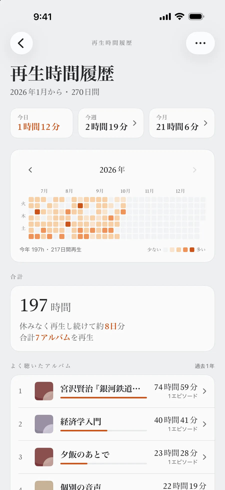

手元の音声を、じっくり聴く。
手元の長時間の音声をiPhoneで再生し、止めたところから再開。聴いた瞬間にメモも残せます。再生にアカウントやインターネットは要りません。
このページにはメモが付いています。時間をタップすると、その場所へ移動。EarMemoのメモと同じ感覚で試せます。

EarMemoを作った理由
聴きたい音声に、集中できる。
EarMemoは、聴く時間を邪魔しません。
おすすめのフィードも、次のエピソードの自動再生も、終わらないリストもありません。ダウンロードした長時間の音声を、静かにひとつの場所へ。残しておきたい一文で止めれば、明日もそこから続きを聴けます。
ライブラリ
聴きかけの音声を、ひとつの場所に
いま聴いているものが、ひとつの画面に。それぞれ止めたところと残り時間を覚えているので、タップすればすぐ続きから。「どこまで聴いたっけ？」と探す必要はありません。
- 「続きを聴く」で、止めたところからそのまま再開
- ファイルをアルバムにまとめ、自由に並べ替え
- 今日の再生時間を画面上部に表示


メモ
その瞬間に戻れるメモ
残したい言葉に出会ったら、ワンタップでマークして、そのまま聴き続けましょう。メモはその場でも、あとからでも書けます。メモをタップすれば、その瞬間から聴き直せます。聴いたことを、手元に残せます。
- メモをタップすると、その瞬間から聴き直せる
- アルバム・エピソード別に整理して、振り返りやすく
- 買い切りのProでメモをMarkdownに書き出し
再生履歴
1年の「聴く」を見渡す
今日も、今週も、今年も。長時間の音声を聴いた時間をEarMemoが記録します。誰かと競うためではなく、「いつも聴いている気がする」を目に見える数字にするために。
- 年間ヒートマップで、日々の再生をひと目で確認
- 日・週・月ごとと、累計の再生時間
- 記録は端末内だけ。アップロードも外部分析もありません


読み込み
手元のファイルを、すばやく取り込む
パソコンのブラウザでアプリに表示されたアドレスを開き、音声をドラッグするだけ。同じWi-Fi内で転送するので、ケーブルもクラウドも要りません。iOSの共有シートから、メッセージ・メール・ファイルの音声も取り込めます。
- ブラウザからWi-Fi転送。ケーブル・クラウド不要
- メッセージ・メール・ファイルの共有シートから読み込み
- mp3・m4a・m4b・flac・aac・wavに対応。mp4・movは音声のみ再生
ほかにも、聴くための機能を
スリープタイマー
Dynamic Islandとロック画面に、ライブアクティビティで残り時間を表示。
バックグラウンド・ロック画面
コントロールセンターとロック画面から再生を操作。
再生速度の変更
声の高さを変えずに、速くもゆっくりも。 （このページでも、下の2×を試せます。）
ブックマーク
保存した場所へワンタップで。長時間の音声を聴き直すときに。
共有シートから読み込み
メッセージ・メール・ファイルなど、共有できるアプリから音声を送れます。
幅広い形式に対応
mp3・m4a・m4b・flac・aac・wavに対応。mp4・mov・m4vは音声のみ再生。M4Bの章情報も読み取ります。
プライバシー
仕組みそのものが、プライバシーを守る
EarMemoに独自のサーバーはありません。設定、再生位置、メモ、ブックマーク、統計は端末内と、有効にしている場合はご自身のiCloudバックアップに保存されます。Wi-Fi転送はローカルネットワーク内だけ。購入はAppleのStoreKitが処理します。
- データ収集なし
- サードパーティSDKなし
- 広告・トラッキングなし
- アカウント・ログイン不要
料金
無料でダウンロード。すべての機能は買い切りで。
無料でダウンロードして、自分のペースで。再生できるアルバムは同時に1つ、試せる音声ファイルはアルバム内のエピソードと個別の音声を合わせて計10本。再生回数の制限ではありません。マークは無制限で、そのうち5件にメモを書けます。読み込みと再生の機能はすべて無料です。EarMemo Proは日本のApp Storeで1,300円の買い切りで、すべての機能が使えるようになります。サブスクリプションも広告もありません。
よくある質問
回答にある時間はリンクです。説明している場所へ戻れます。
EarMemoとは？
EarMemoは、手元のポッドキャスト、オーディオブック、講義、録音など、長時間の音声を聴くためのiOS用プレイヤーです。設定、再生位置、ブックマーク、メモ、再生統計はすべて端末内に保存。独自サーバーを持たず、開発者へのアップロードも、アカウント登録もありません。
似た名前のAI学習アプリと関係がありますか？
いいえ。EarMemoはFan YANGが開発した、iPhone・iPadのオフラインで使える音声プレイヤーです。手元の音声を聴くためのアプリで、似た名前のAI学習・暗記サービスとは無関係です。AI機能、アカウント、独自サーバーはありません。
Apple PodcastsやSpotifyとの違いは？
EarMemoは、ダウンロード済みのポッドキャスト、オーディオブック、講義、ボイスメモなど、手元の音声ファイルを再生します。配信カタログやサブスクリプション、アカウントはありません。自分で管理している長時間の音声を、ひとつのアプリでじっくり聴くために作りました。
オフラインで使えますか？
はい。再生、統計、メモはインターネット接続なしで使え、機内モードでも動作します。Wi-Fiでファイルを転送するときだけは、Wi-Fiをオンにして、パソコンと同じネットワークにつなぐ必要があります。
17:48「プライバシー」へ対応する音声・動画形式は？
mp3、m4a、m4b、aac、flac、wavなどに対応しています。動画（mp4、mov、m4v）は音声のみを再生します。Apple BooksやAudibleで購入したDRM保護付きファイルは読み込めません。
13:40「読み込み」へデータを収集しますか？
いいえ。ユーザーデータは収集しません。サードパーティSDK、アクセス解析、広告、トラッキングもありません。すべてのデータは端末内に保存され、iCloudを有効にしている場合はご自身のバックアップに含まれます。
17:48「プライバシー」へiPadでも使えますか？
はい。iPhoneとiPadの両方に対応しています。iPadでは広い画面に合わせた分割表示を使えます。
ほかのアプリからファイルを読み込めますか？
はい。iOSの共有シートから、メッセージ、メール、ファイルなど、音声や動画を共有できるアプリのファイルをEarMemoに送れます。
13:40「読み込み」へ無料版は期間限定のお試しですか？
無料枠に期限はありません。再生できるアルバムは同時に1つ、試せる音声ファイルはアルバム内のエピソードと個別の音声を合わせて計10本。再生回数の制限ではありません。マークは無制限で、そのうち5件にメモを書けます。読み込みと再生の機能はすべて使えます。枠を超えた項目も表示・削除でき、EarMemo Proを買い切りで購入すると再生できるようになります。
20:30「料金」へ以前の有料版を購入しました。再購入は必要ですか？
いいえ。最新版に更新するとEarMemo Proが自動で有効になります。操作も追加の支払いも不要です。
聴きたい音声をひとつに。自分のペースで、じっくりと。
このアルバムのほかのエピソード
- エピソード1オーディオブックで聴いたことを覚えておくまずマークして聴き続け、あとから自分の言葉を添える。メモを負担にせず、聴いた内容を残す方法。
- エピソード2手元のM4B・MP3オーディオブックを聴く対応ファイル、iPhoneに取り込む4つの方法、ほかのプレイヤーが合う場合。
- エピソード3聴きながらメモを残し、Markdownに書き出すメモからその場面に戻れる仕組みと、文字起こしアプリとの違い。
- エピソード4iTunesを使わずiPhoneに音声を転送Wi-Fi、ファイル、共有シート。それぞれに向いている場面。
- エピソード5アカウントも独自サーバーも、トラッキングもなし「端末内で完結する」とはどういうことか、自分で確かめる3つの方法。